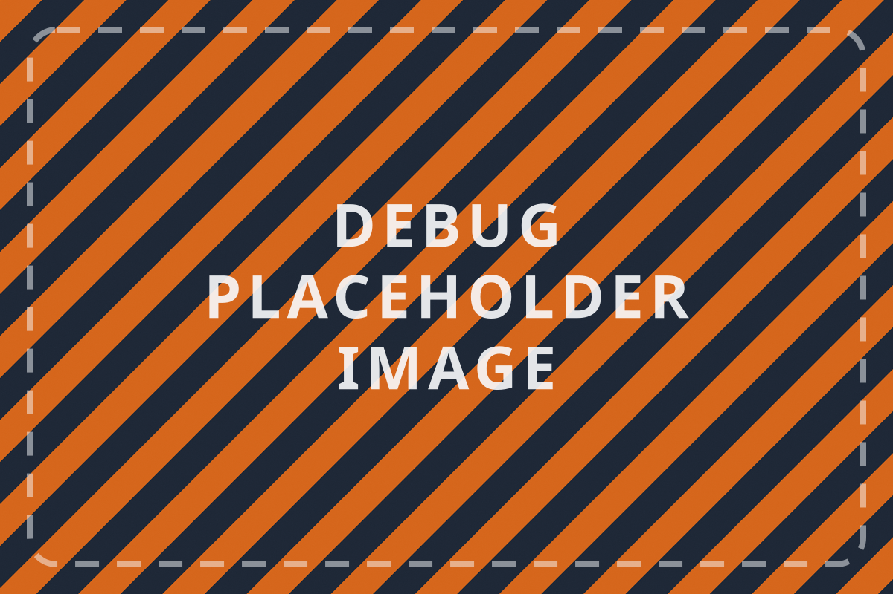

Menubar command center
Lightweight PyObjC shell renders recent snippets with inline transformations and pinned favorites.
- Keyboard palette filters by type, domain, or project tag.
- Snippets open in edit mode for quick cleanup before paste.
Clipboard Intelligence · Cross-Device Suite
Desktop menubar + Android companion that turn fleeting copy events into a synchronized, searchable, and transformable knowledge layer.

Clipboard pulse
Average clipboard events captured during a typical engineering sprint.
Normalized via hashing, whitespace trimming, and URL untracking.
MacBook, Android phone, and a test tablet stay in sync over LAN.
Rolling window kept on device so nothing requires the cloud.
System slices
Lightweight PyObjC shell renders recent snippets with inline transformations and pinned favorites.
Foreground service listens to system clipboard broadcasts and shares events back to desktop over WebSocket.
Per-app allowlists and regex blockers quarantine sensitive entries before they hit the shared history.
ClipClop only talks on the local network, so the backlog of snippets and transforms never leaves my hardware. The suite is tuned for offline-first hacks, research notes, and late-night debugging when Wi-Fi is flaky.
Flow
User copies content on desktop or Android; listeners validate, normalize, and persist the entry locally.
Transformation rules sanitize formatting, classify type (URL, code, text), and add quick-action metadata.
LAN handshake exchanges deltas, collapsing identical items and aligning timestamps across devices.
Menubar palette or Android history view surfaces entries for instant re-copy, share, or transformation.
Gallery